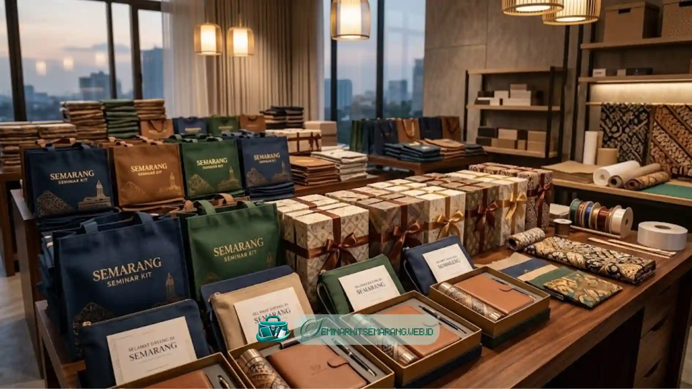

Apa Itu Seminar Kit dan Mengapa Dibutuhkan di Semarang
Seminar kit adalah kumpulan perlengkapan yang dibagikan kepada peserta seminar atau pelatihan,
biasanya terdiri dari tas, alat tulis, dan buku catatan, dan menjadi kebutuhan umum bagi
penyelenggara acara di Semarang.
Seminar kit berfungsi sebagai penunjang kegiatan peserta selama acara berlangsung. Di Semarang,
kebutuhan ini banyak muncul dari instansi pemerintah, kampus, perusahaan swasta, dan event
organizer yang rutin menyelenggarakan pelatihan atau workshop.
Keberadaan seminar kit membantu peserta mencatat materi, membawa dokumen,
dan merasa lebih terlibat dalam acara. Selain fungsi praktis, seminar kit juga berperan sebagai
media branding yang efektif untuk jangka panjang.
Logo instansi atau sponsor yang dicetak pada tas maupun alat tulis dapat meningkatkan visibilitas
acara sekaligus memberi kesan profesional kepada peserta. Seminar kit ini sangat relevan bagi
panitia acara dengan peserta dari puluhan hingga ratusan orang di wilayah Semarang.
Kapan seminar kit dibutuhkan? Seminar kit umumnya dipesan menjelang pelaksanaan seminar, workshop,
pelatihan, atau acara pendidikan lain, dengan waktu pemesanan yang disarankan beberapa minggu
sebelum hari pelaksanaan agar proses produksi lancar.
Apa Saja Isi Standar Seminar Kit Semarang
Isi standar Seminar Kit Semarang umumnya mencakup tas atau totebag, notes,
pulpen, dan flashdisk atau amplop dokumen, yang disesuaikan dengan kebutuhan dan
anggaran penyelenggara acara.
Komponen dasar ini dapat ditambah atau dikurangi sesuai jenis acara. Berikut rincian umum
yang sering digunakan oleh penyelenggara di Semarang:
- Tas atau totebag sebagai wadah utama seluruh perlengkapan
- Notes atau buku catatan untuk mencatat materi seminar
- Pulpen atau alat tulis pendukung lainnya
- Map atau amplop untuk menyimpan dokumen acara
- ID card atau lanyard sebagai tanda pengenal peserta
- Merchandise tambahan seperti mug, gantungan kunci, atau tumbler
Setiap komponen dapat dikustomisasi dengan logo, warna, dan tema acara. Vendor seminar kit di
Semarang umumnya menawarkan pilihan bahan dan tingkat kualitas yang berbeda, mulai dari kategori
ekonomis hingga premium, sesuai dengan anggaran yang tersedia.
Baca Juga
Tren Tumbler Custom di Tahun 2026Berapa Kisaran Biaya Seminar Kit di Semarang
Kisaran biaya seminar kit di Semarang umumnya dipengaruhi oleh jumlah peserta, jenis bahan,
tingkat kustomisasi logo, dan jumlah komponen yang dipesan, sehingga harga dapat bervariasi
antara paket ekonomis dan paket lengkap.
Secara umum, biaya seminar kit dibedakan menjadi beberapa kategori berdasarkan kelengkapan
dan kualitas bahan yang digunakan. Paket dasar biasanya hanya
mencakup tas, notes, dan pulpen dengan bahan standar.
Paket menengah menambahkan komponen seperti map dokumen dan lanyard dengan kualitas bahan yang
lebih baik. Paket premium umumnya menyertakan merchandise tambahan
seperti tumbler atau flashdisk dengan cetakan logo full color.
Faktor lain yang memengaruhi biaya adalah jumlah pemesanan. Semakin banyak jumlah unit yang
dipesan, umumnya harga satuan dapat menjadi lebih ekonomis karena efisiensi produksi yang
diberikan oleh pabrik atau vendor pembuat seminar kit.
Waktu pemesanan juga berpengaruh, karena pemesanan mendadak dapat dikenakan biaya tambahan
untuk proses produksi cepat. Untuk mendapatkan estimasi biaya akurat, disarankan menghubungi
langsung vendor seminar kit di Semarang.
Baca Juga
Cara Mendesain Tas Tote Bag yang EstetikBagaimana Cara Memilih Vendor Seminar Kit Semarang yang Tepat
Cara memilih vendor seminar kit Semarang yang tepat adalah dengan memeriksa portofolio,
kualitas bahan, kecepatan produksi, fleksibilitas kustomisasi, dan ulasan dari pelanggan
sebelumnya sebelum melakukan pemesanan.
Berikut beberapa aspek yang perlu diperhatikan saat memilih vendor. Portofolio dan pengalaman:
Vendor dengan portofolio acara yang beragam umumnya lebih memahami kebutuhan berbagai
jenis seminar, mulai dari acara pemerintahan hingga korporat.
Kualitas bahan dan hasil cetak. Meminta sampel produk sebelum pemesanan dalam jumlah besar
dapat membantu memastikan kualitas bahan dan hasil cetak logo sesuai ekspektasi agar
tidak ada kesalahan yang berarti.

Kecepatan produksi dan pengiriman. Vendor lokal di Semarang umumnya memiliki keunggulan
dari sisi waktu pengiriman karena lokasi produksi yang lebih dekat dengan lokasi acara,
sehingga menjamin ketepatan waktu pengiriman.
Fleksibilitas kustomisasi. Vendor yang baik biasanya menawarkan pilihan desain, warna, dan
komponen yang dapat disesuaikan dengan tema dan anggaran acara. Kejelasan harga dan sistem
pembayaran juga penting diperhatikan oleh panitia.
Kesalahan Umum Saat Memesan Seminar Kit
Kesalahan umum saat memesan seminar kit adalah memesan mendadak tanpa buffer waktu produksi,
tidak memeriksa sampel produk, dan tidak menyesuaikan jumlah pesanan dengan estimasi
peserta yang hadir pada acara tersebut.
Beberapa kesalahan yang sering terjadi antara lain memesan terlalu mepet dengan hari acara
sehingga vendor tidak memiliki waktu cukup untuk produksi dan quality control yang dapat
menurunkan kualitas produk akhir.
Kesalahan lain adalah tidak meminta contoh desain sebelum produksi massal, yang berisiko
menimbulkan kesalahan logo atau warna yang tidak sesuai. Panitia juga kerap kurang
memperhitungkan kemungkinan peserta tambahan.
Disarankan untuk menambahkan cadangan sekitar lima hingga sepuluh persen dari jumlah peserta
terdaftar, agar panitia tidak kerepotan apabila ada peserta tak terduga yang datang
atau terjadi kerusakan barang saat pengiriman.
Tips Memaksimalkan Seminar Kit untuk Acara di Semarang
Tips memaksimalkan seminar kit adalah dengan menyesuaikan tema desain dengan identitas acara,
memilih komponen yang benar-benar dibutuhkan peserta, dan memesan lebih awal untuk
menghindari biaya produksi kilat dan terburu-buru.
Sesuaikan tema visual seminar kit dengan identitas acara atau instansi penyelenggara agar terlihat
konsisten dan profesional. Pilih komponen yang relevan dengan jenis acara, misalnya menambahkan
tumbler untuk acara yang berlangsung seharian penuh.
Pemesanan lebih awal, idealnya beberapa minggu sebelum acara, memberi ruang bagi vendor untuk
melakukan produksi dengan kualitas terbaik tanpa biaya tambahan untuk pengerjaan kilat yang
terkadang ditambahkan oleh vendor-vendor tertentu.
Seminar kit Semarang berperan penting dalam menunjang kelancaran dan kesan profesional sebuah acara.
Pemilihan komponen, penyesuaian anggaran, dan pemilihan vendor yang tepat menjadi faktor utama
keberhasilan pengadaan seminar kit.